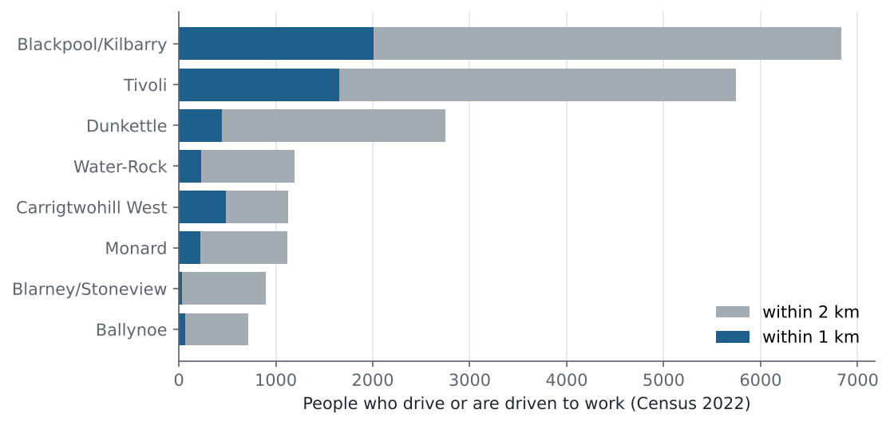
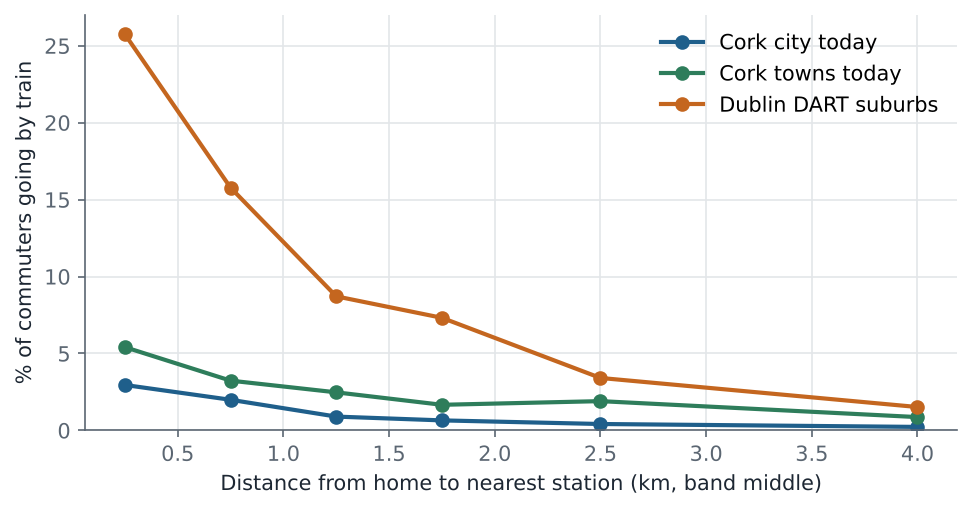
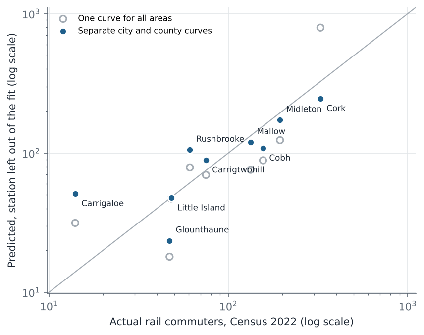
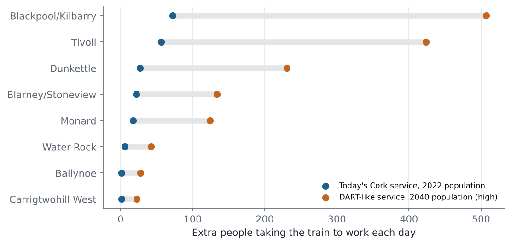

Cork Area Commuter Rail · Census 2022 · eight proposed stations
Who will the eight new Cork stations reach, and how many will switch to rail?
Iarnród Éireann plans eight new stations and a service every 10 minutes on Cork's three commuter lines. The programme page gives no forecast per station. This analysis uses Census 2022 data for every Small Area to show who lives near each proposed station, how they travel to work today, and how many extra rail commuters each station could add, today and in 2040.
The network with eight new stations
Cork's three commuter lines, not to scale. Orange: proposed stations, with the number of people within 1 km who drive or are driven to work today.
Open the interactive map → Every Small Area, every station, both scenarios.
1. Who lives near each proposed station
Blackpool/Kilbarry has the most car commuters within 1 km (2,004). Each Small Area is counted once, for its nearest proposed station. The station positions are approximate, so every station was moved at random by up to 600 m, 300 times: the stations that stay in the top three in at least 90% of moves are Blackpool/Kilbarry, Tivoli.

| Station | Line | People ≤1 km | …not now ≤1 km of rail | Car commuters ≤1 km | Car commuters ≤2 km | In top 3 if moved ≤600 m |
|---|---|---|---|---|---|---|
| Blackpool/Kilbarry | Mallow line | 12,260 | 10,843 | 6,836 | 100% | |
| Tivoli | Cobh/Midleton line | 6,023 | 6,023 | 5,746 | 100% | |
| Carrigtwohill West | Midleton line | 1,464 | 405 | 1,125 | 39% | |
| Dunkettle | Cobh/Midleton line | 1,318 | 1,318 | 2,752 | 38% | |
| Water-Rock | Midleton line | 669 | 669 | 1,197 | 6% | |
| Monard | Mallow line | 599 | 599 | 1,117 | 14% | |
| Ballynoe | Cobh line | 204 | 204 | 716 | 0% | |
| Blarney/Stoneview | Mallow line | 111 | 111 | 898 | 2% |
2. How rail use falls with distance
Only 0.8% of commuters in the study area take the train today. The share is highest near stations and falls quickly with distance, and it is lower in the city than in the towns at the same distance, so the city and the county towns get separate curves.
Within half a kilometre of a station, 5.4% of commuters in the county towns and 3.0% in the city take the train today, against 25.7% around the north-east Dublin DART stations, which run every 10–15 minutes at peak. The gap is the size of the prize from the planned 10-minute service. The Dublin curve is an upper analogue, not a forecast: Dublin has more jobs within a short train ride, and more congestion to avoid.

3. Does distance explain station use? A leave-one-out test
For each existing Cork station, the curve was fitted without that station's area and used to predict its rail commuters. With one curve for every area, the ranking of stations is roughly right (correlation 0.86), but Kent's own area was predicted at 794 rail commuters against 326 actual, because people in the city centre can walk or take the bus to work. With separate curves for the city and the county towns, Kent's prediction becomes 246, the median error per station falls from 43% to 25%, and the correlation is 0.95. The Cobh branch fits worst: Carrigaloe, which has few homes nearby, is over-predicted and Cobh under-predicted, a reminder that a station's surroundings matter as well as distance. The estimates below use the split curves and should be read as accurate to tens of percent, not to the person.

| Station | Small areas | Commuters | Rail, actual | Predicted, one curve | Predicted, city/county curves |
|---|---|---|---|---|---|
| Cork | 621 | 56,369 | 326 | 794 | 246 |
| Midleton | 53 | 6,201 | 194 | 124 | 172 |
| Cobh | 39 | 3,766 | 156 | 89 | 108 |
| Mallow | 62 | 5,647 | 133 | 76 | 119 |
| Carrigtwohill | 22 | 2,773 | 75 | 69 | 89 |
| Rushbrooke | 32 | 3,408 | 61 | 79 | 105 |
| Little Island | 73 | 8,014 | 48 | 47 | 48 |
| Glounthaune | 9 | 812 | 47 | 18 | 23 |
| Carrigaloe | 24 | 2,610 | 14 | 31 | 51 |
4. Extra rail commuters from each new station
A new station moves some homes closer to rail. The extra commuters are the people in those homes times the rise in the curve between their old and new distance. With today's service and 2022 homes the gain is 203 people a day across all eight stations. With a DART-like service it is 1,016, and 1,417–1,511 with 2040 population (39–49% growth from 2022, from CMATS). These are people travelling to work only; students, leisure trips and park-and-ride users from further away add to them.

| Station | Today's service | 95% low | 95% high | DART-like, 2022 | DART-like, 2040 low | DART-like, 2040 high |
|---|---|---|---|---|---|---|
| Blackpool/Kilbarry | 72 | 55 | 88 | 341 | 476 | 507 |
| Tivoli | 56 | 45 | 69 | 285 | 397 | 424 |
| Dunkettle | 27 | 21 | 33 | 155 | 216 | 231 |
| Blarney/Stoneview | 22 | 19 | 25 | 90 | 125 | 134 |
| Monard | 17 | 15 | 20 | 83 | 116 | 124 |
| Water-Rock | 6 | 4 | 8 | 28 | 39 | 42 |
| Ballynoe | 1 | 1 | 2 | 19 | 26 | 28 |
| Carrigtwohill West | 2 | 1 | 3 | 15 | 21 | 22 |
What this means for planning
The stations with the largest reach are where the 10-minute service matters most. Several stations (Monard, Carrigtwohill West, Water-Rock) mainly serve homes and jobs that are planned but not yet built, so Census 2022 understates them by design: their case rests on development, which this analysis cannot see. Where the estimate is small even under a DART-like service, the case for the station depends on park and ride and new development rather than existing homes.
Limitations
Station positions are estimated from published descriptions, not survey drawings; edit
data/new_stations.csv to update them, and the location test above shows how much that matters.
Distances are straight lines, not walking routes. The Census counts the main mode to work in April 2022,
when many people worked from home part of the week. Growth to 2040 is applied evenly, while real growth
will concentrate in planned areas. The Dublin analogue includes destinations and congestion that Cork lacks.
Reproduce it
pip install -r requirements.txt, python tests/run_tests.py, then
python run_pipeline.py. Every number on this page is read from results/.